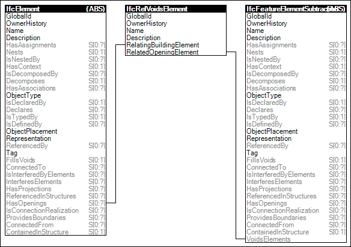

Link to this page
Link to this pageElements may have voids defined, which may be partial recess or extending full depth. Voids for openings may optionally be filled by another element such as a door or window.
The use of the concept Element Voiding in the context of geometric representations implies a Boolean difference operation between the body geometry of the element and the body geometry of the void.
Figure 65 illustrates an instance diagram.
 |
Figure 65 — Element Voiding |